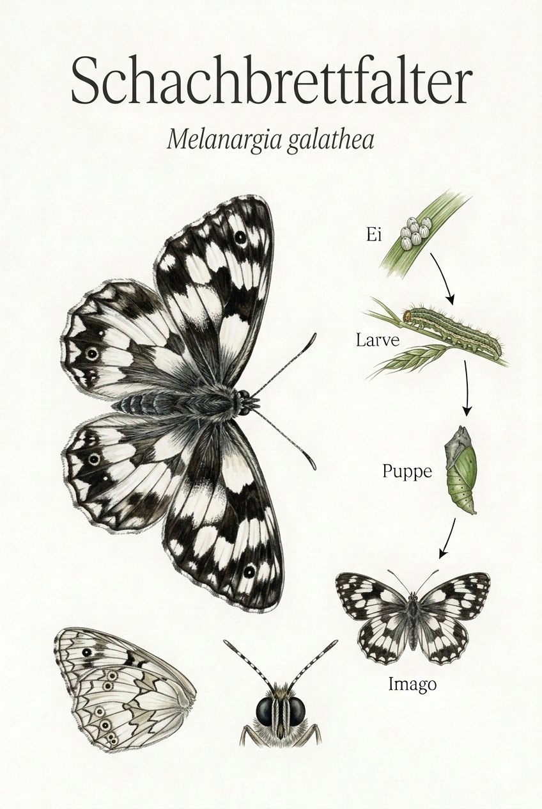
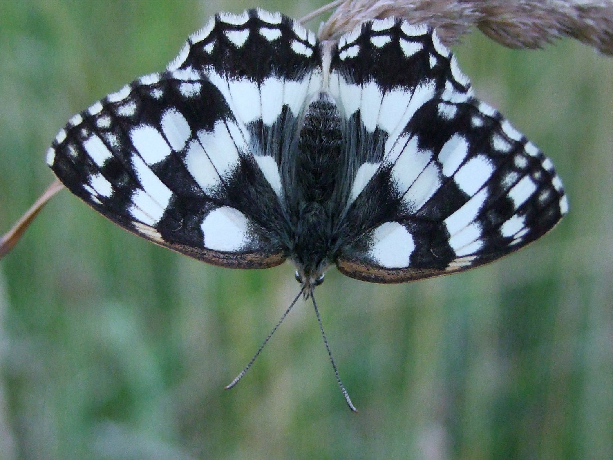

Insekten › Schmetterlinge › Tagfalter › Augenfalter

Melanargia galathea

Foto: Michael Baur · Olympus OM-5 · CC BY-NC
Der Schachbrettfalter ist unverwechselbar. Kein anderer mitteleuropäischer Tagfalter trägt dieses klare Muster aus Schwarz und Weiß – wie ein lebendes Schachbrett, das über die Mähwiese flattert. Im Hochsommer, wenn die Kalkwiesen blühen, kann er stellenweise in Dutzenden gleichzeitig vorkommen. Dann tanzen sie in kleinen Gruppen über die Blütenköpfe, trinken Nektar und sonnenbaden auf Grashalmen.
Kurz nach dem Schlüpfen aus dem Ei hört die Raupe des Schachbrettfalters auf zu fressen. Kaum größer als ein Reiskorn, begibt sie sich in den Boden und bleibt dort den ganzen Winter ruhend liegen. Erst im Frühjahr beginnt sie zu fressen – an Gräsern, die auf mageren Böden üppig wachsen. Diese lange Ruhezeit bindet den Falter fest an ungestörte, mehrjährige Grünlandflächen.
Wer den Schachbrettfalter sehen möchte, muss auf magere, nährstoffarme Wiesen gehen – Böschungen, Feldraine, Kalk-Halbtrockenrasen. Gedüngte Intensivwiesen meidet er völlig. Im Ebsdorfergrund findet er noch geeignete Lebensräume an sonnigen Hängen. Wo er häufig ist, lohnt sich der Blick auf die Pflanzenwelt ringsum – dort wächst garantiert mehr als man auf den ersten Blick denkt.
Texte und Bilder aus der Broschüre „Schmetterlinge im Ebsdorfergrund“ (Michael Baur), 1:1 übernommen · Fotos CC BY-NC, Illustrationen im Stil klassischer Lehrtafeln. Die Artseite ist der gemeinsame Endpunkt von Bestimmungsschlüssel und Stammbaum.